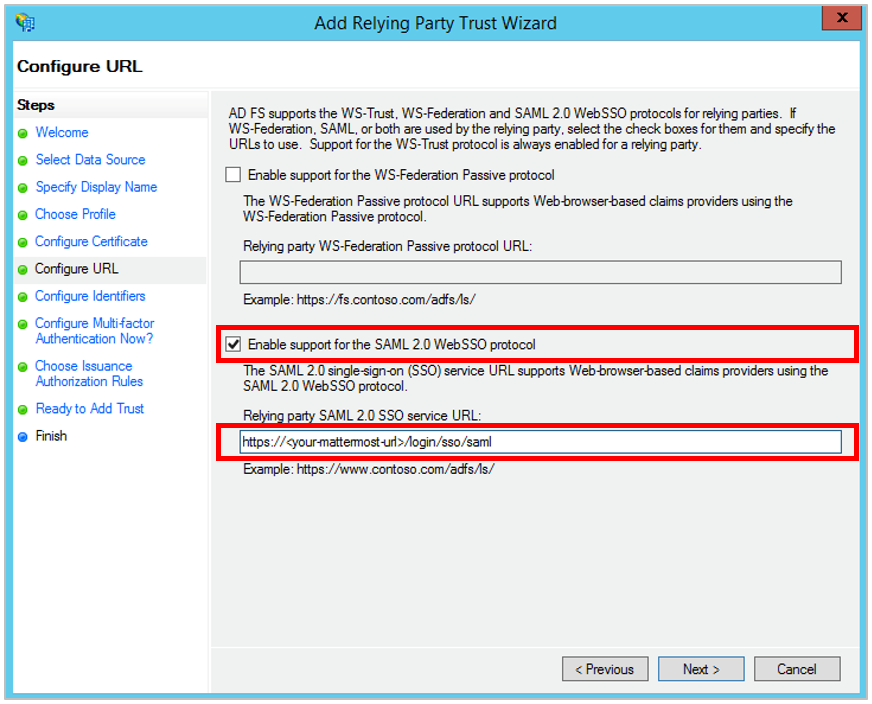
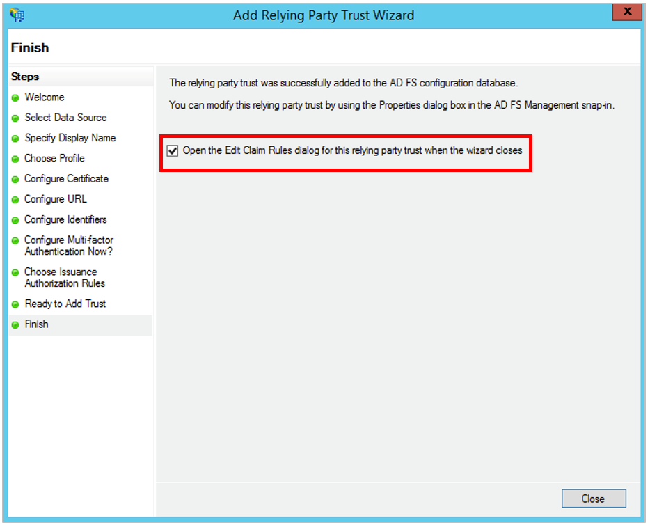
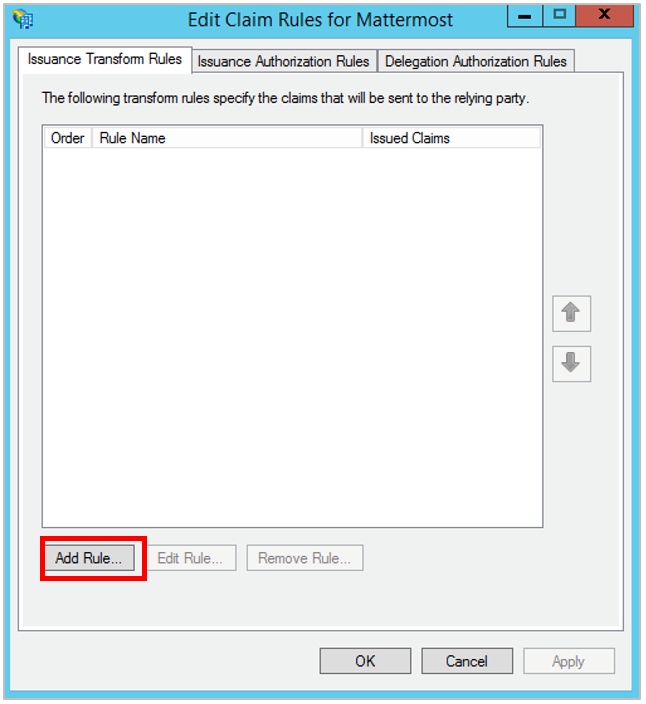
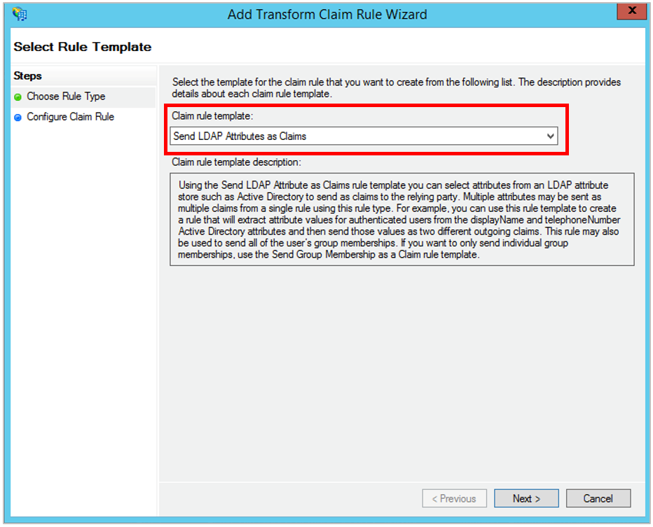
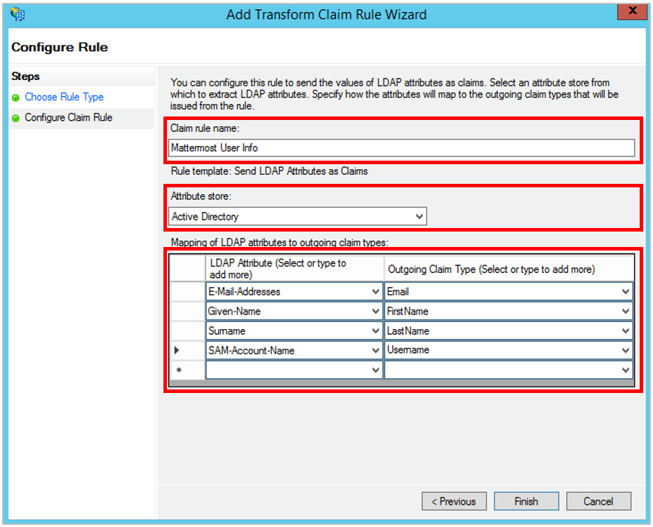
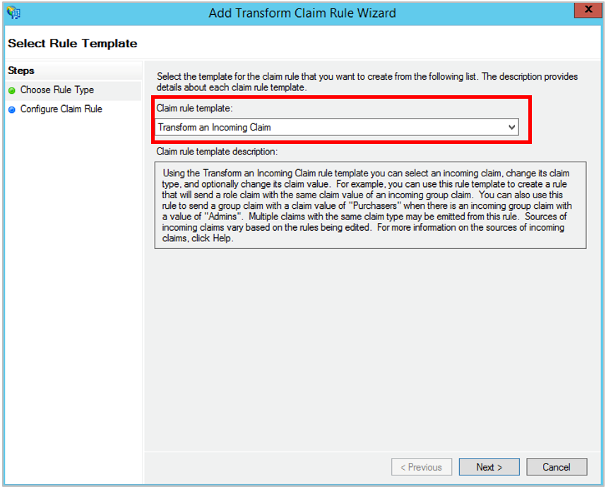
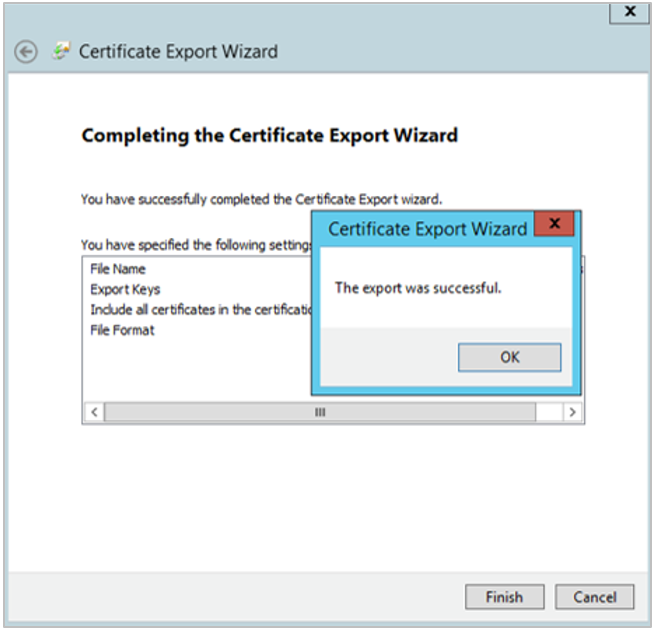

Configure SAML with Microsoft ADFS (Active Directory Federation Services)¶
The following process provides steps to configure SAML with Microsoft ADFS for Mattermost.
Basic Requirements for ADFS¶
The following are basic requirements to use ADFS for Mattermost:
- An Active Directory instance where all users have a specified email and username attributes. For Mattermost servers running 3.3 and earlier, users must also have their first name and last name attributes specified.
- A Microsoft Server running. The screenshots used in this guide are from Microsoft Server 2012R2, but similar steps should work for other versions.
- An SSL certificate to sign your ADFS login page.
- ADFS installed on your Microsoft Server. You can find a detailed guide for deploying and configuring ADFS in this article.
Pre-installation¶
1 - On your ADFS installation, note down the value of the SAML 2.0/W-Federation URL in ADFS Endpoints section, also known as the SAML SSO URL Endpoint in this guide. If you chose the defaults for the installation, this will be /adfs/ls/.
2 - Before configuring SAML with Microsoft ADFS, make sure you have the XML Security Library installed on your Mattermost instance. The XML Security Library is usually included as part of Debian GNU/Linux.
Also confirm if the xmlsec1-openssl library was successfully installed. If not, run
apt-get install libxmlsec1-opensslon Ubuntuyum install xmlsec1-opensslon RHEL
3 - (Optional) If you would like to set up encryption for your SAML connection, generate encryption certificates now. You are free to use our script in the /docs repo or use another method to generate them.
You should save the two files that are generated, which will be referred to as the Service Provider Private Key and the Service Provider Public Certificate in this guide.
Adding a Relying Party Trust¶
4 - In ADFS management sidebar, go to AD FS > Trust Relationships > Relying Party Trusts and click Add Relying Party Trust…

5 - A configuration wizard for adding a new relying party trust opens. In the Welcome screen, click Start.

6 - In the Select Data Source screen, select the option Enter data about the relying party manually.

7 - In the Specify Display Name screen, enter a Display Name to recognize the trust, such as Mattermost, and add any notes you want to make.

8 - In the Choose Profile screen, select the option AD FS profile.
9 - In the Configure Certificate screen, leave the certificate settings at their default values.
However, if you would like to set up encryption for your SAML connection, click the Browse… button and upload your Service Provider Public Certificate.
10 - In the Configure URL screen, select the option Enable Support for the SAML 2.0 WebSSO protocol and enter the SAML 2.0 SSO service URL, which is of the form https://<your-mattermost-url>/login/sso/saml.

11 - In the Configure Identifiers screen, enter the Relying party trust identifier (also known as the Identity Provider Issuer URL) of the form https://<your-idp-url>/adfs/services/trustand click Add.
12 - In the Configure Multi-factor Authentication Now screen, you may enable multi-factor authentication, but this is beyond the scope of this guide.

13 - In the Choose Issuance Authorization Rules screen, select the option Permit all users to access this relying party.
14 - In the Ready to Add Trust screen, you can review your settings.
15 - In the Finish screen, select the option Open the Edit Claim Rules dialog for this relying party trust when the wizard closes, and click Close. You will now exit configuration wizard and a Claim Rules editor opens.

Creating Claim Rules¶
16 - In the Issuance Transform Rules of the Claim Rules editor, click the Add Rule… button. This action opens an Add Transform Claim Rule Wizard.

17 - In the Choose Rule Type screen, select Send LDAP Attributes as Claims from the drop-down menu, then click Next.

18 - In the Configure Claim Rule screen, enter a Claim Rule Name of your choice, select Active Directory as the Attribute Store and do the following:
- From the LDAP Attribute column, select
E-Mail-Addresses. From the Outgoing Claim Type, typeEmail - From the LDAP Attribute column, select
Given-Name. From the Outgoing Claim Type, typeFirstName - From the LDAP Attribute column, select
Surname. From the Outgoing Claim Type, typeLastName - From the LDAP Attribute column, select
SAM-Account-Name. From the Outgoing Claim Type, typeUsername
For Mattermost 3.4 and later, the FirstName and LastName attributes are optional.
Then, click Finish to add the rule.
Note that the entries in the Outgoing Claim Type column can be chosen to be something else. They can contain dashes but no spaces. Note that they will be used to map the corresponding fields in Mattermost later.

19 - Create another new rule by clicking the Add Rule… button.
20 - In the Choose Rule Type screen, select Transform an Incoming Claim from the drop-down menu, then click Next.

21 - In the Configure Claim Rule screen, enter a Claim Rule Name of your choice, then
- Select
Name IDfor the Incoming claim type - Select
Unspecifiedfor the Incoming name ID format - Select
E-Mail Addressfor the Outgoing claim type
Moreover, select the Pass through all claim values option. Then click Finish.
22 - Click Finish to create the claim rule, then OK to finish creating rules.
23 - Open Windows PowerShell as an administrator and run the following command:
Set-ADFSRelyingPartyTrust -TargetName <display-name> -SamlResponseSignature "MessageAndAssertion"
where <display-name> is the name you specified in step 7. In our example it would be mattermost.
This action will add the signature to SAML messages, making verification successful.
Export Identity Provider Certificate¶
Next, we export the identity provider certificate, which will be later uploaded to Mattermost to finish SAML configuration.
24 - In ADFS management sidebar, go to AD FS > Service > Certificates and double click on the certificate under Token-signing. You may alternatively right-click the field, then click **View Certificate...*

25 - In the Certificate screen, go to the Details tab and click Copy to File…, then OK. This opens a Certificate Export Wizard.

26 - In the Certificate Export Wizard screen, click Next. Then, select the option Base-64 encoded X.509 (.CER) and click Next again.
27 - In the Certificate Export Wizard screen, click Browse to specify the location you want the Identity Provider Certificate to be exported, and specify the file name.

28 - Click Save. In the Certificate Export Wizard screen, verify the file path is correct, and click Next.
29 - In the Completing the Certificate Export Wizard, click Finish, then OK to confirm the export was successful.

You’re now about to finish configuring SAML for Mattermost!
Configure SAML for Mattermost¶
30 - Start Mattermost server and sign into Mattermost as a System Administrator. Go to System Console > Authentication > SAML.
SAML SSO URL: SAML 2.0/W-Federation URL ADFS Endpoint you noted in step 1.Identity Provider Issuer URL:Relying party trust identifierfrom ADFS you specified in step 11.Identity Provider Public Certificate: X.509 Public Certificate you downloaded in step 29.

31 - (Optional) Configure Mattermost to verify the signature. The Service Provider Login URL is the SAML 2.0 SSO service URL you specified in ADFS in step 10.

32 - (Optional) Enable encryption by uploading the Service Provider Private Key and Service Provider Public Certificate you generated in step 3.

33 - Set attributes for the SAML Assertions, which will be used to update user information in Mattermost. Attributes for email and username are required and should match the values you entered in ADFS in step 15. See documentation on SAML configuration settings for more detail.
For Mattermost servers running 3.3 and earlier, the first name and last name attributes are also required fields.
34 - (Optional) Lastly, customize the login button text.
35 - Click Save.
You’re done! If you’d like to confirm SAML SSO is successfully enabled, switch your System Administrator account from email to SAML-based authentication via Account Settings > General > Sign-in Method > Switch to SAML SSO and sign in with your SAML credentials to complete the switch.
It is also recommended to post an announcement about how the migration will work to users.
You may also configure SAML for ADFS by editing config.json. Before starting the Mattermost server, edit config.json to enable SAML based on SAML configuration settings. You must restart Mattermost server for the changes to take effect.
Troubleshooting¶
The following are troubleshooting suggestions on common error messages and issues.
1. System Administrator locks themselves out of the system¶
If the System Administrator is locked out of the system during SAML configuration process, they can set an existing account to System Administrator using a commandline tool.
2. Received error message: An account with that username already exists. Please contact your Administrator.¶
This usually means an existing account has another authentication method enabled. If so, the user should sign in using that method (such as email and password), then change their sign-in method to SAML via Account Settings > Security > Sign-in method.
This error message can also be received if the Username Attribute of their SAML credentials doesn’t match the username of their Mattermost account. If so, the user can update the attribute at their identity provider (for instance, back to the old value if it had been previously updated).
3. Received error message: An account with that email already exists. Please contact your Administrator.¶
This usually means an existing account has another authentication method enabled. If so, the user should sign in using that method (such as email and password), then change their sign-in method to SAML via Account Settings > Security > Sign-in method.
This error message can also be received if the Email Attribute of their SAML credentials doesn’t match the email address of their Mattermost account. If so, the user can update the attribute at their identity provider (for instance, back to the old value if it had been previously updated).
4. Received error message: SAML login was unsuccessful because one of the attributes is incorrect. Please contact your System Administrator.¶
Confirm all attributes, including Email Attribute and Username Attribute, are correct in both the ADFS configuration and in System Console > SAML.
5. Unable to switch to SAML authentication successfully¶
First, ensure you have installed the XML Security Library on your Mattermost instance and that it is available in your PATH.
Second, ensure you have completed each step in our guide for configuring SAML with Microsoft ADFS.
Third, you may consult the Microsoft ADFS troubleshooting guide for potential issues with the ADFS installation.
Lastly, if you are still having trouble with configuration, feel free to post in our Troubleshooting forum and we’ll be happy to help with issues during setup.